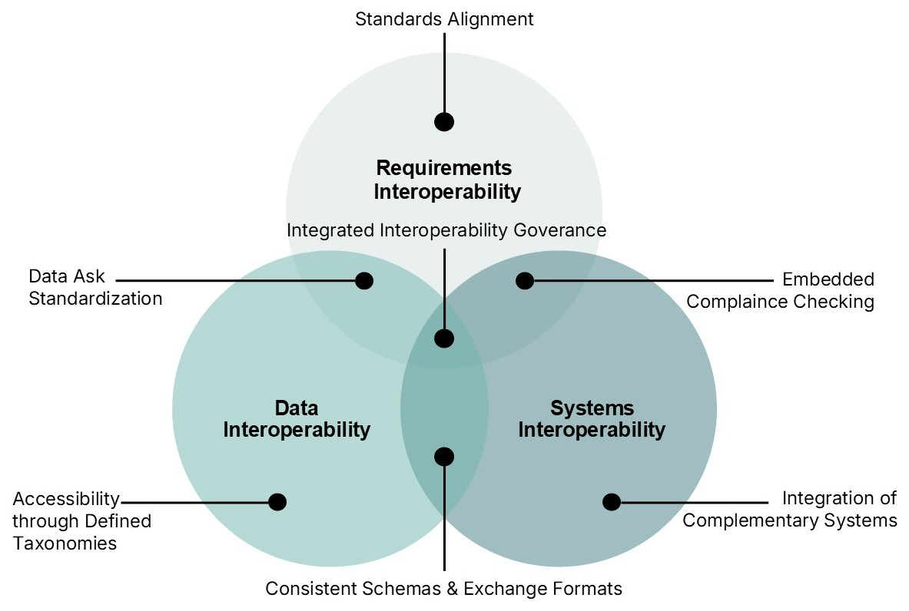
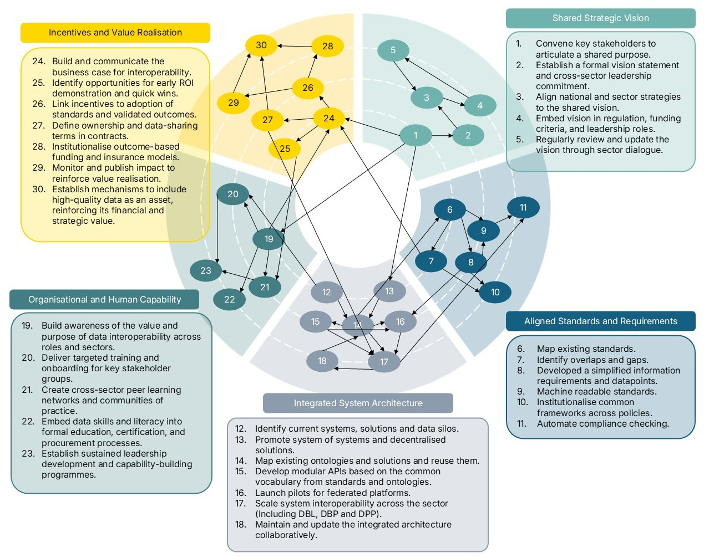
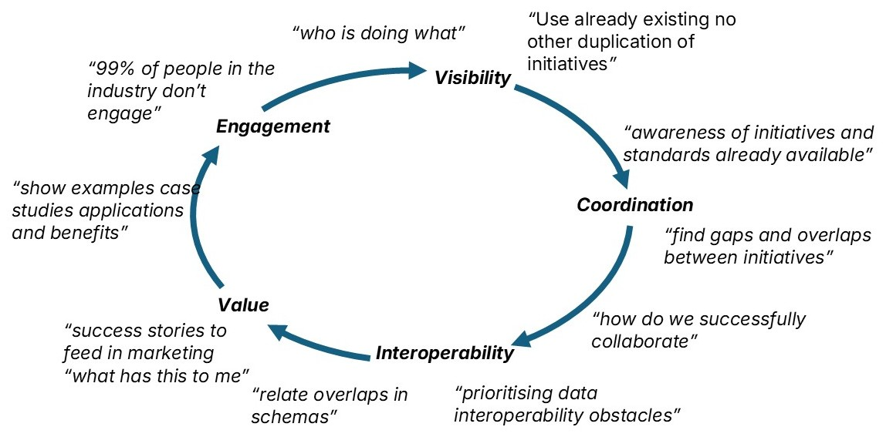

Where it began
Three separate journeys started us off: an ambition that academics should support industry, a failure in an unsuccessful proposal, and a success in a collaborative report — each asking the same question: how should interoperability in the built environment actually be approached?
Interoperability cannot be treated in silos or as neat layers. The layers connect and influence one another, behaving as a system of systems.
So we challenged the layered view and saw interoperability as a Venn diagram, where the layers overlap and feed into each other. We founded CBEDS to connect these aspects.
A reframed problem
The realisation that set the direction for everything that followed.

Interoperability in practice
With CBEDS established, the reframing had to be tested in the real world. In April 2025 we convened 52 experts to put interoperability to the test in practice.
Across the conversations the same gaps and frictions surfaced again and again. We captured them as 30 recommendations spanning the full data lifecycle.
Rather than leave them in a report, we published everything openly and turned the evidence into a live dashboard others could reuse.
30 recommendations & an open dashboard
A report and a live dataset for other researchers to build on.

Collective impact
The open evidence drew in the people who set direction. In January 2026 we brought 46 working group leaders together to ask what was holding the sector back.
A pattern emerged that no single initiative could see alone: a fragmentation loop. Effort was duplicated and energy lost because the sector shared no common vision.
We responded by co-creating the missing piece — a shared vision and direction the community could align around.
A shared vision & direction
A common reference point the community can align around.

Collaboration to scale
A shared vision only matters if people can act on it together. In June 2026 we gathered 27 collaborators to focus on collaboration and coordination.
It became clear that connection does not scale on goodwill alone. It needs coordinating infrastructure to turn alignment into collective impact.
So we built the means to keep the ecosystem connected and in sync — the CBEDSync knowledge graph and the network behind it.
CBEDSync & the network
The knowledge graph and connections that let existing efforts find one another.
One ecosystem, three roles
Everything we learned now runs through three connected roles, each carrying the probe, sense, respond rhythm forward.
CBEDSync
Making the ecosystem visible. The knowledge graph that lets existing initiatives, standards and projects find one another.
Open →CBEDSynergy
Building the network. Bringing people and organisations together so the ecosystem can work as one.
Open →CBEDSense
Interoperability, value and engagement. Making sense of the built environment and connecting it to what Sync and Synergy enable.
Open →